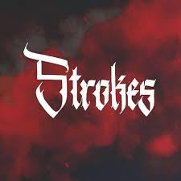

Member Service Attendant
David A. Beckerman Recreation Center
University of New Haven
As a Member Service Attendant at the Beckerman Recreation Center, I served as a front-line customer service representative, ensuring a welcoming and inclusive environment for all members and guests. My role involved supervising fitness areas, processing memberships and transactions, and assisting with ChargerREC programs and events. I also helped enforce facility policies, maintained cleanliness, and supported daily operations, including opening and closing procedures. Additionally, I participated in trainings, assisted with emergencies, and contributed to the overall success of ChargerREC programs and services.

Member of Strokes Club
Amity School of Engineering and Technology
Amity University
Being a member of the Strokes Club at Amity University, a fine arts club, allowed me to explore and enhance my creativity beyond academics. Engaging in painting and artistic projects helped me develop an eye for detail, patience, and innovative thinking—skills that translate into my problem-solving approach in data science. It also provided a space for self-expression and collaboration, reinforcing my ability to think outside the box and bring a creative perspective to technical challenges.
Member of Leadership Club
High School
Salwan Public School
Being a member of the Leadership Club during high school helped me develop essential skills in teamwork, communication, and decision-making. It provided me with opportunities to take initiative, organize events, and work collaboratively with peers, fostering a strong sense of responsibility and confidence. These experiences shaped my ability to lead, adapt, and think critically—qualities that continue to guide me in both academic and professional settings.